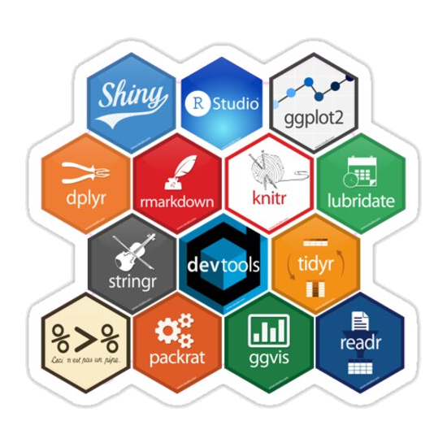

AI assistants: A framework for semi-automated, accountable, and tooling-rich data wrangling
Tomas Petricek
with Gerrit J.J. van den Burg, Alfredo Nazabal, Taha Ceritli, Ernesto Jimenez-Ruiz, Christopher K. I. Williams
University of Kent & The Alan Turing Institute
tomas@tomasp.net | @tomaspetricek
Motivation
AI tools for data wrangling
Data wrangling
Getting data into usable form
- Merge data from multiple sources
- Fix errors and missing data
- Add semantic information
Sure you want to be a data scientist?
- Takes 80% of data science project
- Tedious iterative manual process
Can automatic AI tools help with this?
DEMO
Merging real-world CSV files with datadiff
What do we want
Semi-automatic data wrangling tools that are
Interactive - Let analyst guide and correct things
Unified - Share common structure
Accountable - Not just opaquely transform data
Tooling-rich - Integrate with notebook tools
Wrattler
A glimpse of the future

Wrattler project
Research extension for JupyterLab
Mix languages, build interactive tools, analyse code provenance
DEMO
Wrattler and outlier detection

How AI assistants work
- Start with no constraints
- Guess a cleaning script
- Run it to show preview
- Offer constraints to add
- Continue from 1
Theory
Formalizing AI assistants
Tooling support
Interacting with an AI assistant in Wrattler

Formal model
Why AI assistants need a formal model
Capture what an AI assistant really is
Formally define the interface
Explain how tools can use AI assistants
Lets us easily capture many examples
Examples
Some useful AI assistants
DEMO
Datadiff AI assistant
Evaluation
What can we do with this
Evaluation
What can we do with AI assistants
Many existing tools fit this model!
Can be extended for Bayesian framework
Qualitative evaluation using case studies
Count necessary human interactions
Quantitative evaluation

Can wrangle more data with a few hints!
- But any evaluation is tricky
- About specific tools, not the framework
- Needs ad-hoc data set for each assistant
Conclusions
Framework of AI assistants
AI assistants: A framework for semi-automated, accountable, and tooling-rich data wrangling
- Programming theory meets machine learning!
- Capture important class of ML tools!
- But where & how should we publish this??
Tomas Petricek, University of Kent
tomas@tomasp.net | @tomaspetricek